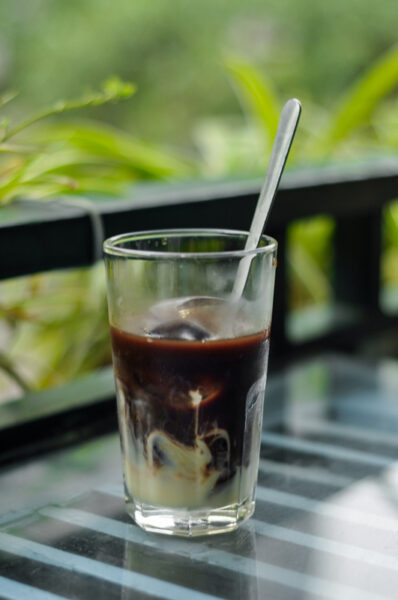

Cafe sữa sài gòn
Cà phê cóc Sài Gòn là thứ văn hóa giản dị, đời thường và gần như ăn sâu vào máu thịt của người Sài Gòn. Những ly cà phê sữa ở bệt được pha chế đơn giản với ít sữa bên dưới, một ít cà phê đã pha sẵn đổ vào, khuấy lên tạo thành một màu nâu đặc trưng nên một vài người thường gọi cà phê sữa là nâu đá.
Cafe espresso

Espresso là café được pha bằng máy, sử dụng nước nóng nén bởi áp suất cao qua lớp bột cà phê được xay mịn. Nước dùng để pha chế Espresso là nước tinh khiết, còn café dùng để pha chế theo phương pháp này cũng phải là café rang mộc, không tẩm ướp bất kỳ tạp chất nào.